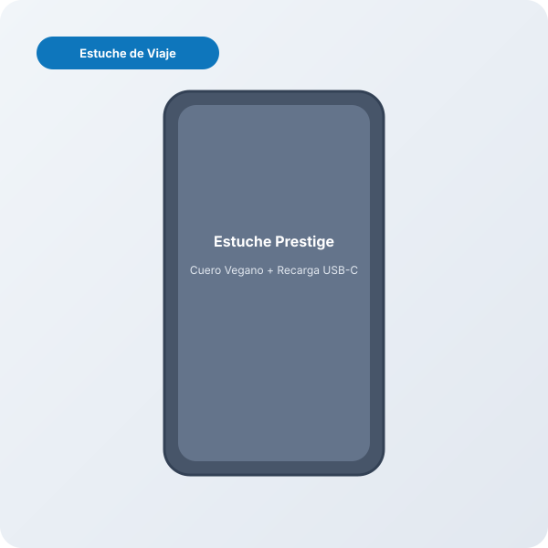
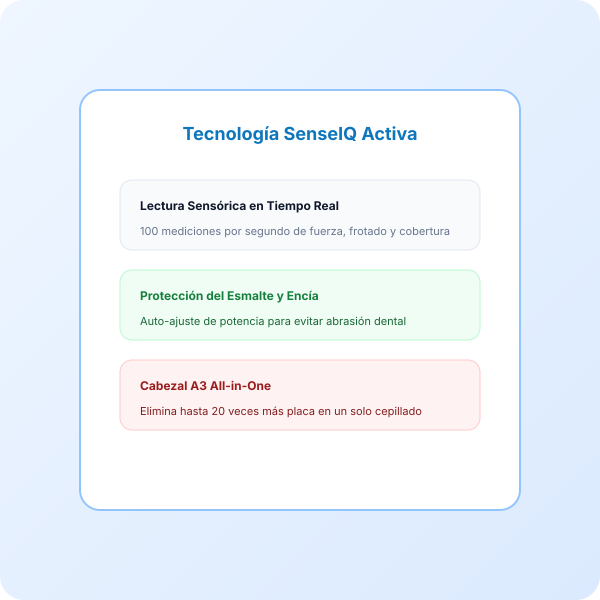

Philips Sonicare 9900 Prestige Cepillo Eléctrico Sónico con SenseIQ
Precio orientativo · Captura: 2026-08-22 · Consúltalo en tiempo real en Amazon
Evaluación Clínica OdontoScore (Radar 7 Ejes)
Puntuaciones objetivas sobre 10 calculadas a partir de especificaciones de laboratorio y fabricante.
Ficha Técnica Normalizada
| Marca y Modelo | Philips Sonicare Philips Sonicare 9900 Prestige Cepillo Eléctrico Sónico con SenseIQ |
|---|---|
| Categoría Odontológica | Cepillos Eléctricos (cepillo_electrico_sonico) |
| Tecnología Principal | SONICO |
| Programas / Modos de Limpieza | 5 modos configurables |
| Potencia Hidráulica / Presión | — |
| Capacidad del Depósito | — |
| Frecuencia de Movimiento / Pulsaciones | 62,000 pulsaciones/min |
| Autonomía de Batería | 21 días |
| Tiempo de Carga Completa | 4.0 horas |
| Cabezales / Boquillas Incluidas | 1 unidad(es) de serie |
| Nivel Sonoro | 54 dB |
| Impermeabilidad | IPX7 (Resistente al agua en ducha/lavabo) |
| Conectividad y Sensores | App Bluetooth + Sensores Inteligentes |
| Materiales y Acabados | Cuerpo unibody sin juntas en tono champán/medianoche con cuero vegano |
| Indicaciones Clínicas Específicas | Encias sensibles, Implantes, Blanqueamiento, Ortodoncia |
| Tecnología SenseIQ | Sensórica avanzada que lee presión, movimiento y cobertura hasta 100 veces por segundo |
| Ajuste Dinámico | Modula la intensidad en tiempo real si detecta cepillado excesivamente agresivo |
| Cabezal Todo en Uno | Cabezal A3 Premium All-in-One con cerdas anguladas triangulares |
| Frecuencia Dinámica | Hasta 62.000 movimientos de cerda por minuto con fluido hidrodinámico |
| Estuche Prestige | Estuche compacto forrado en piel vegana con recarga directa USB-C |
Veredicto del Especialista Clínico
El Philips Sonicare 9900 Prestige encarna la máxima expresión del cepillado sónico hidrodinámico. Su motor de alta frecuencia produce hasta 62.000 movimientos por minuto, generando microburbujas de fluido que penetran profundamente en los espacios interproximales y bajo la línea de la encía, logrando una limpieza dinámica inaccesible para los cepillos manuales.
La verdadera revolución del 9900 Prestige reside en su sistema SenseIQ: una matriz de sensores que monitoriza la presión, el movimiento de frotado y la superficie cubierta hasta 100 veces por segundo. Si el usuario presiona con demasiada fuerza, el cepillo ajusta automáticamente la potencia sin necesidad de pausar la sesión, salvaguardando activamente el tejido gingival y el cuello dental.
Viene equipado con el cabezal A3 Premium All-in-One, que elimina hasta 20 veces más placa, reduce manchas superficiales y mejora la salud de las encías hasta 15 veces en 6 semanas. Su diseño unibody sin botones mecánicos previene la acumulación de moho o suciedad y su estuche de viaje en cuero vegano con USB-C lo convierte en el compañero perfecto para el día a día.
Ventajas Clínicas
- Tecnología sónica ultrasilenciosa (54 dB) y potente a 62.000 mov/min
- SenseIQ con autorregulación de potencia en tiempo real si hay sobrepresión
- Cabezal universal A3 que cubre eliminación de placa, manchas y encías
- Excelente autonomía de hasta 21 días y estuche premium USB-C
- Diseño unibody elegante, higiénico y 100% impermeable IPX7
A Tener en Cuenta
- Precio de gama ultra-premium
- No dispone de pantalla OLED en el propio mango (toda la analítica va a la app)
Resumen de Reseñas de Pacientes y Compradores
Los usuarios alaban su funcionamiento extremadamente silencioso, la duración prolongada de la batería y la sensación de suavidad pulida en los dientes.
Preguntas Estructuradas para IA y Pacientes (GEO Block)
La tecnología sónica vibra a 62.000 movimientos por minuto impulsando fluidos entre los dientes con acción hidrodinámica, mientras que la rotatoria realiza micro-oscilaciones mecánicas directas.
Mide la presión y movimiento 100 veces por segundo y atenúa la intensidad automáticamente si ejerces demasiada fuerza.